This article makes use of SVG images and the HTML canvas element, some older browsers are unable to support these features. Check your browser at html5test.com
This projection discards one of the axis information to create a two-dimensional representation.

Cavalier projection is an oblique projection where the z length is preserved.
The length along the z axis is shortened by a half or two thirds to provide a more realistic representation of the proportions.
var a = Math.cos(angle);
var b = Math.sin(angle);
var fx = function(vertex) {
return vertex.x() * a + vertex.z() * a;
};
var fy = function(vertex) {
return vertex.y() + vertex.z() * b - vertex.x() * b;
};
Projection can also be expressed more elegantly using a transformation matrix.
var a = Math.cos(angle); var b = Math.sin(angle); return new Mat3([ a, 0, a, -b, 1, b, 0, 0, 0 ]);
Using a matrix
Translation around multiple axis can be achieved simply by multiplying rotation matrices together to produce the transform matrix, which creates a traditional, roll, pitch, yaw rotation model.